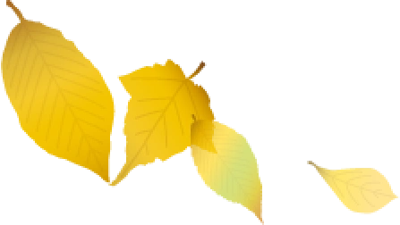

奥入瀬渓流は、
歩行者のための空間へ変わります。
奥入瀬（青橅山）バイパス完成後は、奥入瀬渓流区間に通年の車両交通規制を導入する予定です。
プロジェクトの展望はこちら>>>
奥入瀬（青橅山）バイパス完成後は、奥入瀬渓流区間に通年の車両交通規制を導入する予定です。
プロジェクトの展望はこちら>>>
シャトルバス時刻表はこちら
駐車場はこちら
チケット販売場所はこちら

お知らせ

2024年度の奥入瀬自然博物館にご協力いただきありがとうございました
今年度の奥入瀬自然博物館、マイカー交通規制は終了いたしました。
多くの皆様のご協力、誠にありがとうございました。
2025年度の奥入瀬自然博物館、マイカー交通規制は、
2025年10月27日（月）～11月2日（日）です。
詳しい内容は、近くなりましたら公開いたします。
みなさまと、また奥入瀬でお会いできることを楽しみにしています。
奥入瀬十和田利活用協議会・奥入瀬渓流エコツーリズムプロジェクト実行委員会 一同
過去の記事はこちら

詳しく見る
エコロードフェスタ
についての
パンフレットはこちら

Youtube Video

アクセス
お問い合わせ